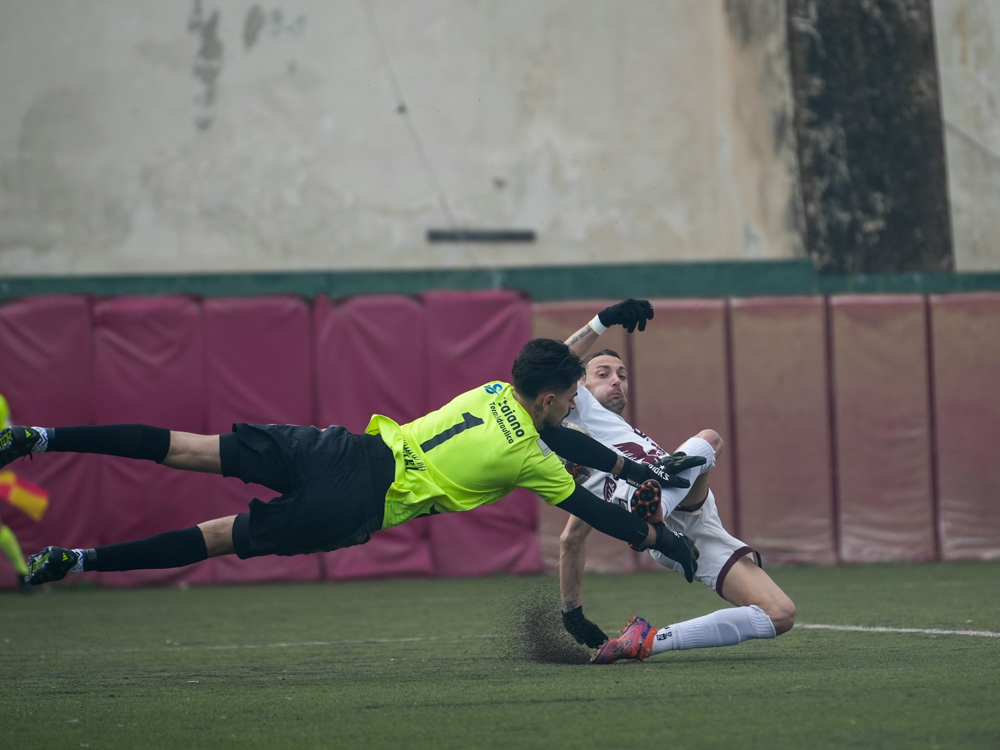

1-й тайм
Кипербатл — соревнование вратарей
Битва вратарей, самостоятельный игровой блок.
1очко за победу*

Часть 1 · Концепция и правила
Кипербол — новый формат футбола, в котором вратарское мастерство становится центром игры и внимания. Здесь вратарь — не только последняя линия обороны, а ключевой герой каждого матча.
Состав матча
1-й тайм
Битва вратарей, самостоятельный игровой блок.
2-й тайм
Игра по правилам футбола с нововведениями.
Очки
Первый тайм.*
Второй тайм и серия пенальти.**
* В раундах плей-офф за победу в кипербатле очки не начисляются, а даётся фора в один мяч в последующем футбольном матче.
** Во втором тайме разыгрываются 2 очка — только на групповых этапах. В плей-офф победитель выходит в следующий раунд.
1-й тайм
2-й тайм
Игра ведётся по правилам футбола (ФИФА/УЕФА/РФС) со следующими нововведениями.
* По решению организаторов, в зависимости от возраста участников, места проведения и статуса соревнований, численный состав команд, размер игрового поля и ворот могут быть изменены (уменьшены).
** При длительных остановках игры (более 1 минуты), по решению главного судьи, время тайма может быть увеличено.
Нововведение
После игры